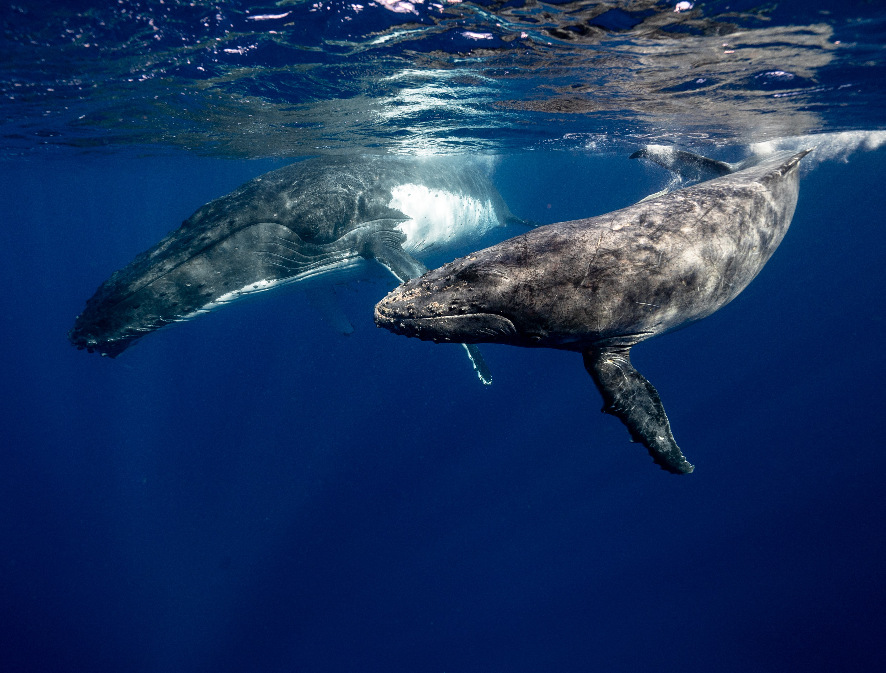
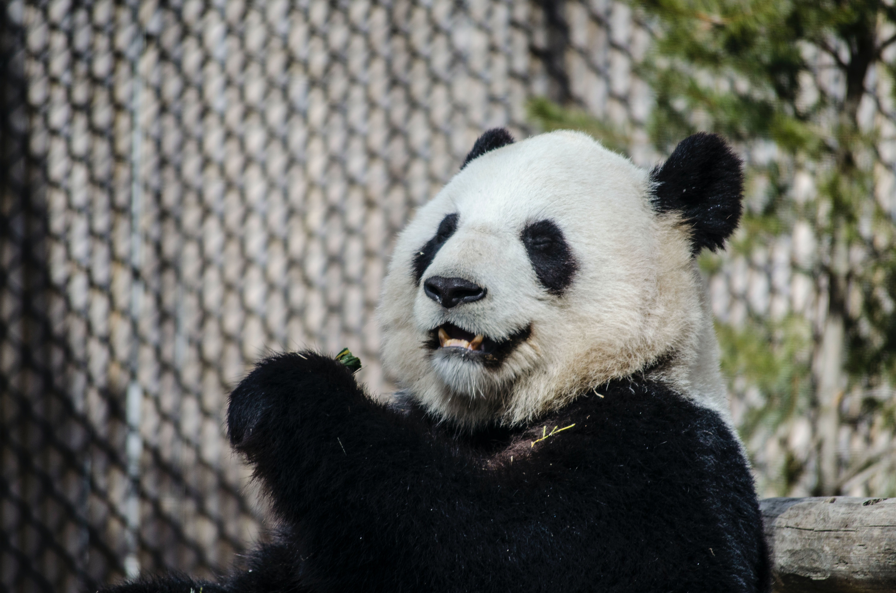
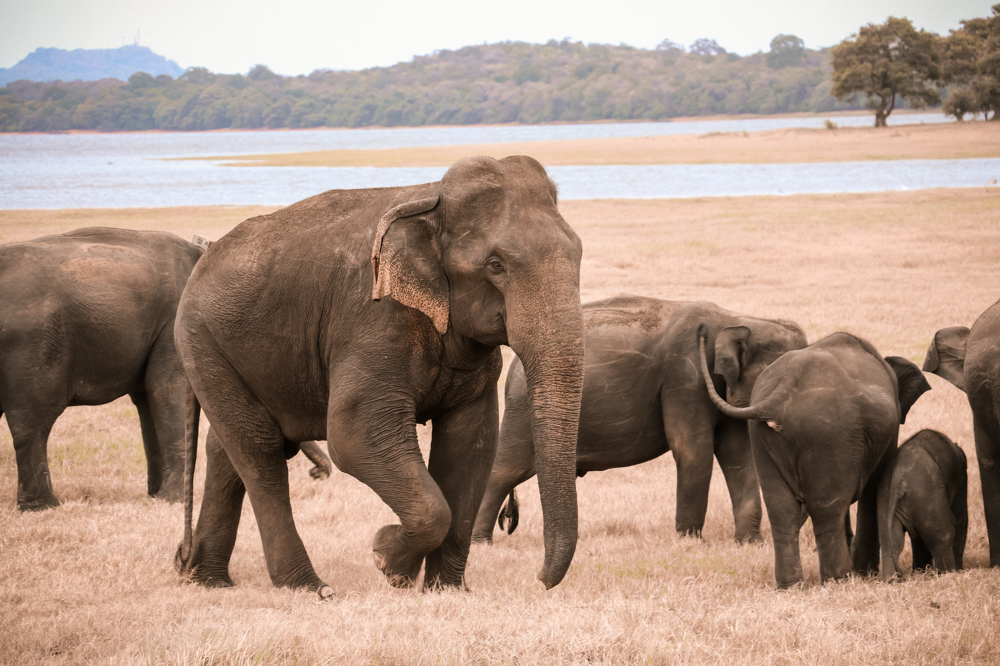

Whales
As many as 300,000 whales, dolphins, and porpoises are killed every year from entanglement in fishing gear. Climate change is shifting their prey populations, especially in the polar regions, making it harder for them to find food. Eight million tons of plastic are entering the sea every year—about one full garbage truck every minute. New research shows whales near large cities ingest around 3 million microplastics per day.
Pandas
Giant pandas spend 10-16 hours a day eating. So next time you grab a snack, just know you’re channeling your inner panda. They eat around 26 to 84 pounds of bamboo every day, depending on what part of the bamboo they are eating.
Asian Elephants
Asian elephants are extremely sociable, forming groups that are led by the oldest and most experienced female, the matriarch. The more we learn about their social dynamic, the more we see that Asian elephants form vast networks, and studies show they even maintain connections with elephants they go a long time without seeing.
Sea Turtles

Once hatchlings make it out to sea, they embark on an epic journey that can eventually lead species like the loggerhead to migrate across the entire Atlantic Ocean. Sea turtles get to their destinations through a combination of strategic swimming mixed with passive drifting on ocean currents.